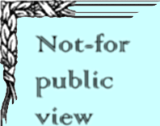

|  |
|
Home Histories Charts Photos Maps Restricted - - > News Info Contact |
This is for more recent histories, temple information, etc. that should not be open for public view. Click here to submit information, ask questions or make comments HistoriesHistory and stories of Archie Earl Buchanan.Archie Earl and Florene Buchanan family book - originally created by Deane Buchanan Wilcox (OR as a PDF document - better for printing) The descendants of Archie Earl and Florene Davis Buchanan Forrest Buchanan History John Johnson Davies Patriarchal Blessing The family group record for Archie and Flo's family Please contact Joseph with any corrections. |